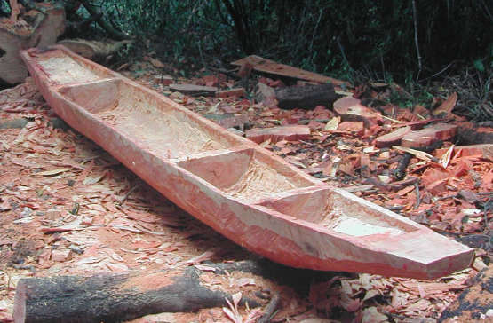
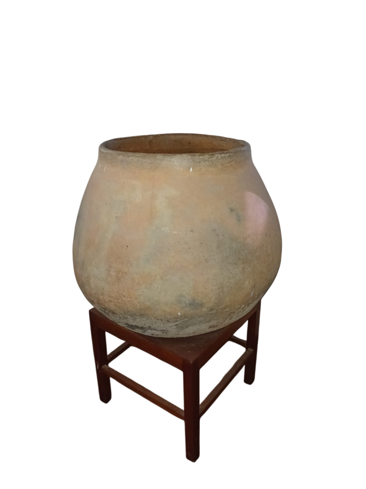
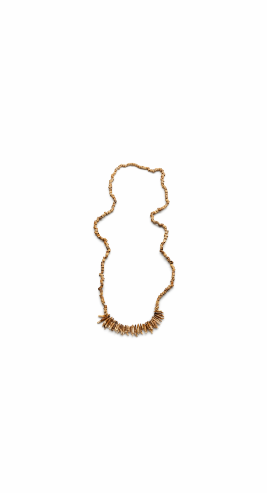
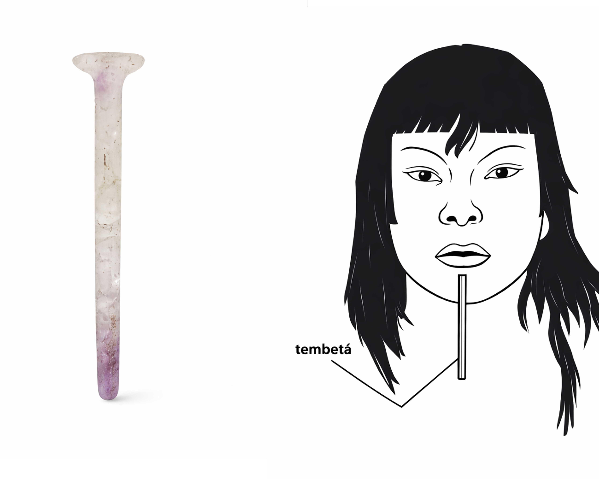
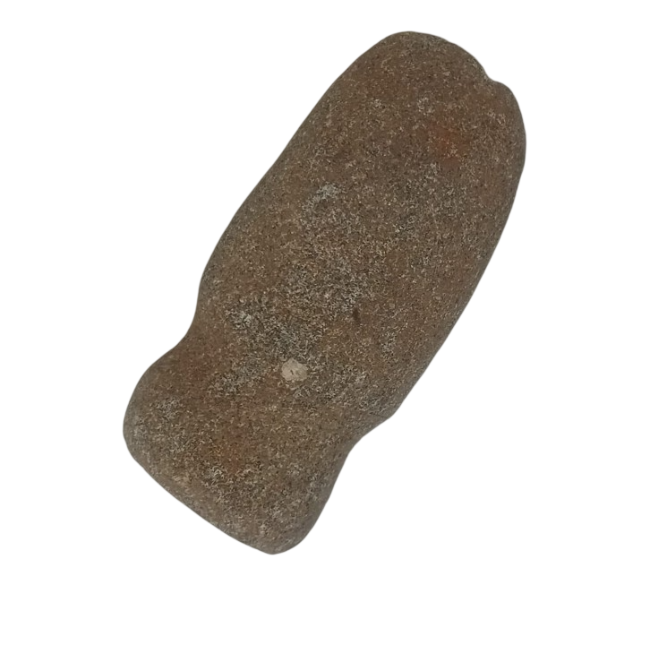
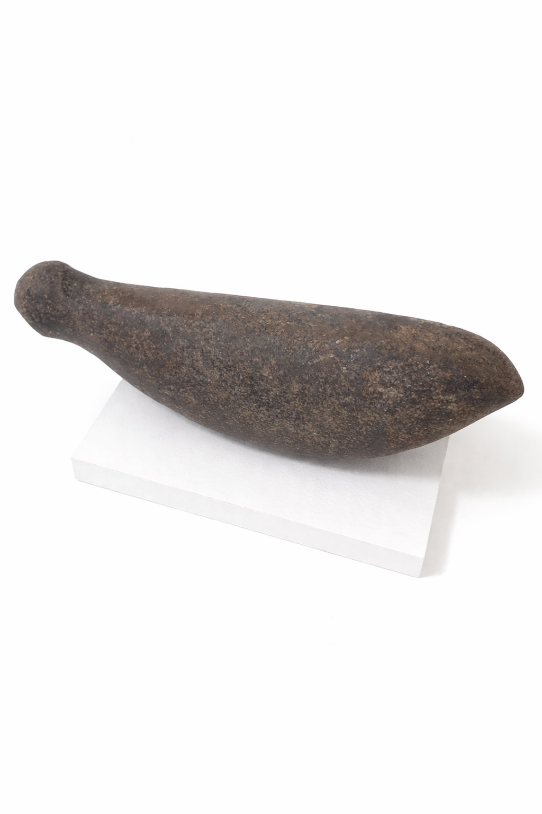
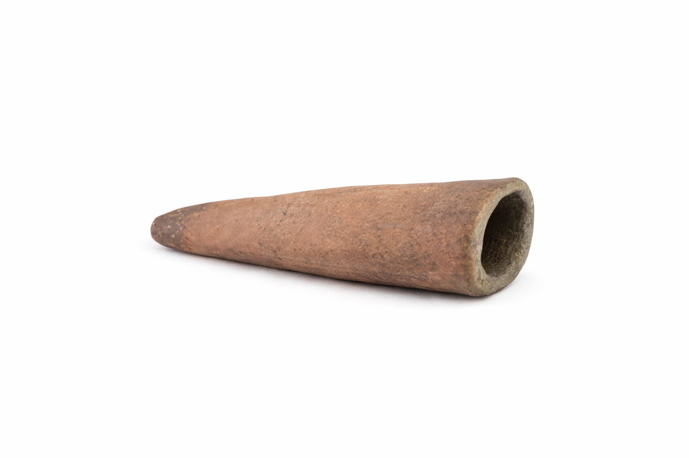
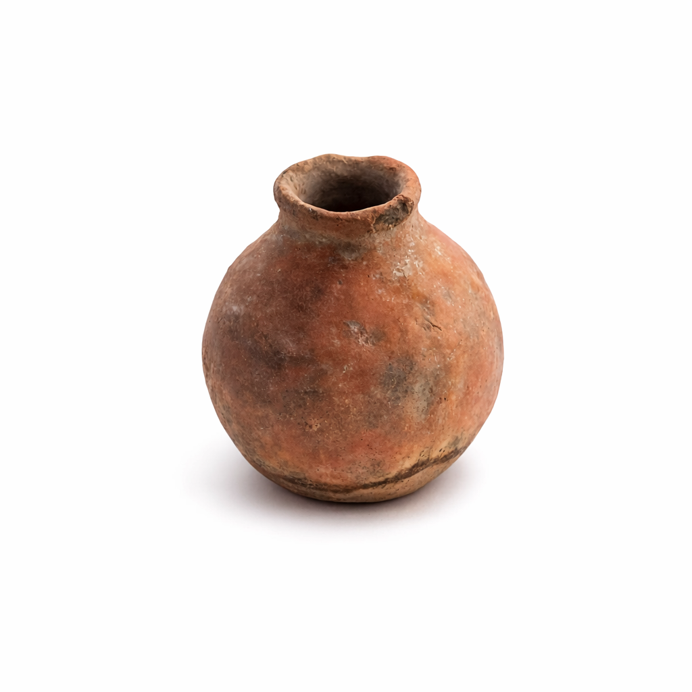
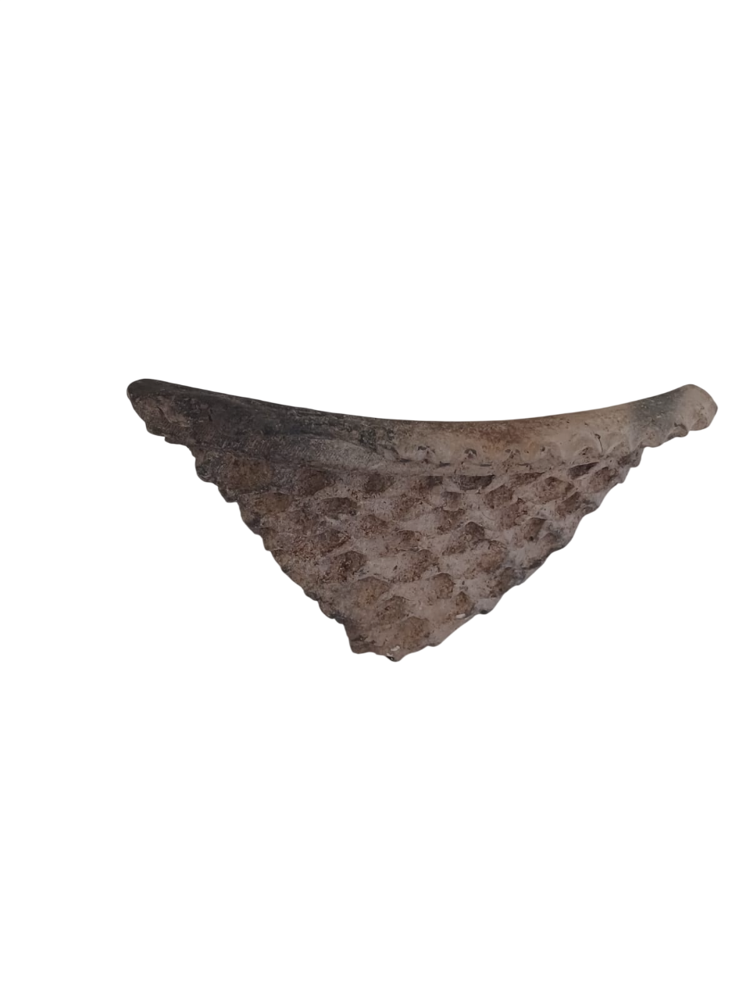

Alguns itens do nosso acervo
O Espaço de Preservação Arqueológica (LAPAN) reúne peças provenientes de pesquisas desenvolvidas na região do Pantanal e áreas adjacentes. Os artefatos apresentados abaixo representam práticas culturais, tecnológicas e simbólicas de diferentes grupos humanos que habitaram a região.
Clique nas imagens para visualizar a descrição de cada item.









Esses itens são apenas uma amostra do nosso acervo, que inclui uma variedade de artefatos arqueológicos, etnográficos e históricos relacionados à região do Pantanal. Cada peça conta uma história única sobre as culturas e sociedades que habitaram essa área ao longo do tempo.
Para mais informações sobre o acervo, pesquisas arqueológicas e projetos vinculados ao Laboratório de Arqueologia do Pantanal, acesse os links abaixo.